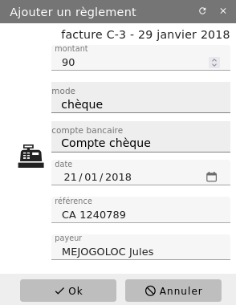
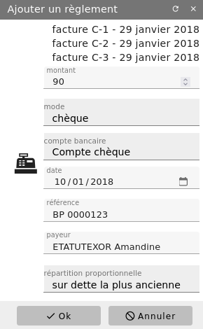

Règlement¶
Depuis un module tel que la facturation (Menu Facturier/Facture) ou la gestion de copropriétaire (Menu Copropriété/Les propriétaires et les lots, onglet Appels et règlements), il vous est possible de gérer des règlement.
Depuis la fiche du document, cliquez sur «ajouter» un règlement.


Dans la boîte de dialogue, saisissez le détail du règlement reçu du tiers en précisant le mode de paiement. 7 modes de paiement vous sont proposés:
espèces
chèque
virement
prélèvement
carte de crédit
autre
interne
Le mode espèces sera lié à un mouvement comptable avec le code référencé dans Administration/Configuration des règlements (onglet Paramètres, champ « compte de caisse »). Pour les modes chèque, virement, prélèvement, carte de crédit et autre, vous devez préciser le compte bancaire sur lequel imputer ce mouvement financier. Le mode interne permet d’utiliser un autre justificatif financier (comme par exemple un avoir) pour « solder » celui-ci. Un rapporchement ou une écriture de compensation sera alors réalisé en comptabilité.
Vous pourrez voir alors dans les documents liés le net-à-payer et le ou les règlements correspondants ainsi que le reste dû.
Chaque règlement génère automatiquement une écriture comptable au journal.
Il est également possible de réaliser un règlement multiple. Suivant le type de document sur lequel ce paiement est associé, vous pouvez avoir plusieurs modes de répartition:
Par date : le paiement est d’abord ventilé sur la facture la plus ancienne, puis la suivante, etc.
Par prorata : le paiement est automatiquement ventilé sur toutes les factures sélectionnées, au prorata de leurs montants.


Quelque soit le mode de répartition, une seule écriture comptable d’encaissement sera alors générées.